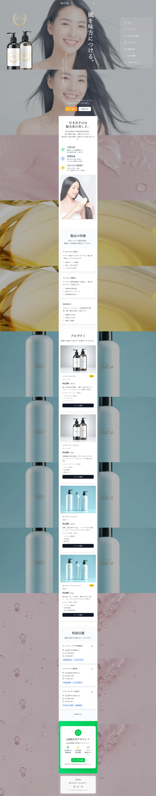

WORKS-04
04
SILCIA
SILCIA
LP
- 担当範囲
- デザイン、コーディング
- 使用言語・ソフト
- React、TailwindCSS、Typescript、Vite、figma Make、Adobe Firefly
- 対応機種
- パソコン、タブレット、スマートフォン

スマホ特化デザインのモバイルファーストLPです。PC表示時もスクロールに応じて背景画像が切り替わり、単調な画面にならないようにしています。
デザインにFigma make、モデル写真と商品画像はAdobe Fireflyを使用して生成したものを加工しています。
- サイト概要
- モバイルファーストLP制作
- クライアント・依頼内容（想定）
- オンライン販売をメイン販路とするヘアケア製品ブランド。
SNS広告と連携させるLPを制作しコンバージョンを向上させたいが、LPの制作自体にかかる費用はなるべく抑えたいという希望により、デザイン枚数を抑えるためにモバイルファーストデザインを提案。 AI活用により工数と納期を抑える方針で制作を行った。 - ターゲット層
- 40～70代女性
- サイトデザインの方向性
- 製品の信頼性・高品質をアピールしたい。
いかにもなAI感は出したくない。 - 制作意図・工夫した点
- AIをフル活用し、短い制作期間でどこまでできるか試してみる目的で作成したLPです。
Figma Makeでデザインのプロトタイプを作成し、React+TypeScript形式でエクスポート。 Viteで作成したプロジェクト上に適用させ、動きやデザイン、文言等の細かい部分を調整していきました。
Figma Makeのコードをそのまま移行するだけではライブラリ等の依存関係が不足するため、そこは適宜追加する必要がありました。
Figma MakeからReact形式でエクスポートした場合、細かいUIパーツごとに出力してくれるため、今後別プロジェクトにもコンポーネントを再利用できるようにすれば時間短縮できると感じました。